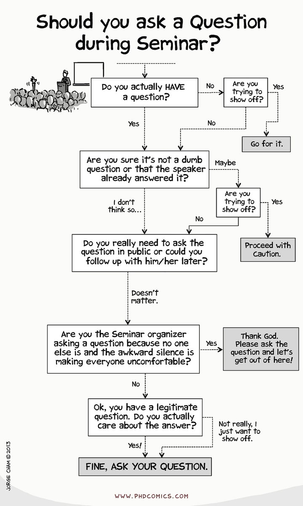
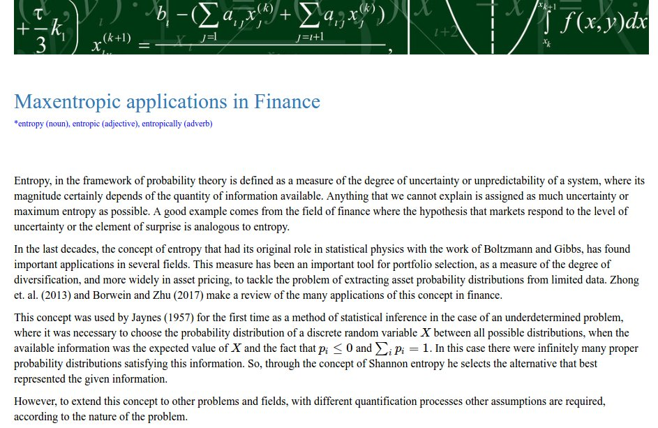
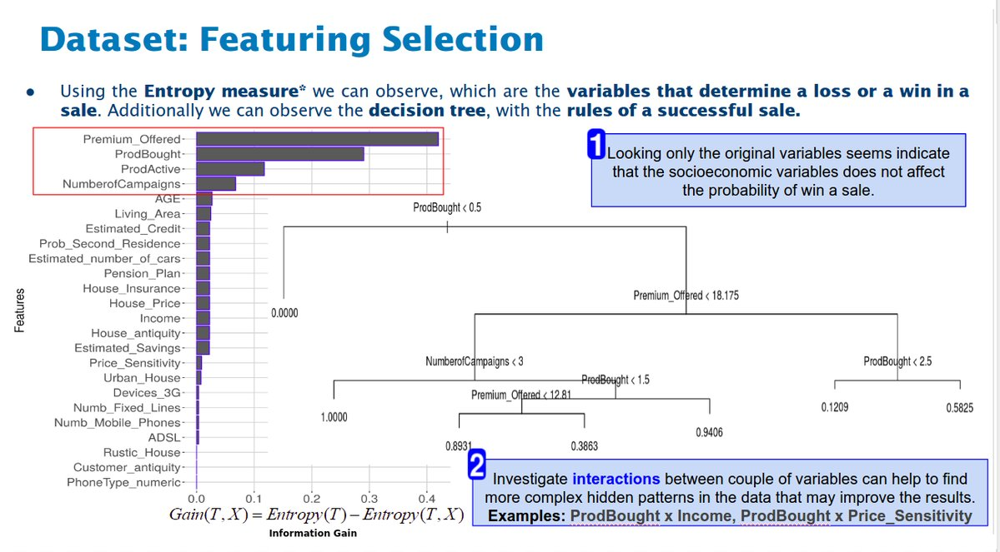
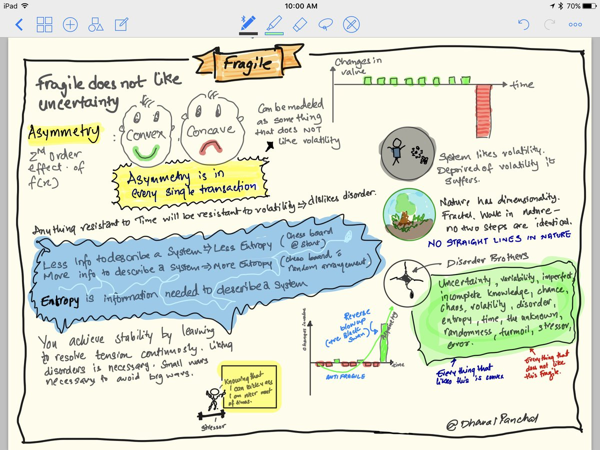

Tweets
- Tweets, current page.
- Tweets & replies
- Media
You blocked @erikapatg
Are you sure you want to view these Tweets? Viewing Tweets won't unblock @erikapatg
-
Thanks. Twitter will use this to make your timeline better. Undo
-
You RetweetedThanks. Twitter will use this to make your timeline better. Undo
-
You Retweeted
“A thing appears random only through the incompleteness of our knowledge.” -- Spinoza
Thanks. Twitter will use this to make your timeline better. Undo -
Maximum entropy for text classifier http://blog.datumbox.com/machine-learning-tutorial-the-max-entropy-text-classifier/ …
#maxent#entropy#MachineLearningThanks. Twitter will use this to make your timeline better. Undo -
Calibration of Discrete Time Short Rate Term Structure Models from Coupon Bond Prices :: SSRN https://papers.ssrn.com/sol3/papers.cfm?abstract_id=2976076#.WVencEdxwAE.twitter …
Thanks. Twitter will use this to make your timeline better. Undo -
For seminars, office reunions and meetings in general... :)https://twitter.com/PHDcomics/status/877187802550591488 …
Thanks. Twitter will use this to make your timeline better. Undo -
Maxentropic applications in Finance. https://erikapat.github.io/Maxent_Finance.html … …
#Finance#entropy#maxent#riskpic.twitter.com/v7HYgIINt9Translated from French by BingThanks. Twitter will use this to make your timeline better. Undo -
You Retweeted
Huff called it a consumer choice model, not a gravity model. But still a good discussion.
#business#geographyhttps://twitter.com/GisGeography/status/773323289452089344 …Thanks. Twitter will use this to make your timeline better. Undo -
Thanks. Twitter will use this to make your timeline better. Undo
-
Does it make sense to do categorization of continuous variables? http://www.dataminingapps.com/2016/06/does-it-make-sense-to-do-categorization-of-continuous-variables/?lipi=urn%3Ali%3Apage%3Ad_flagship3_feed%3BTcii6Iy5Tu2k4cmNicmHfw%3D%3D …
Thanks. Twitter will use this to make your timeline better. Undo -
Thanks. Twitter will use this to make your timeline better. Undo
-
You Retweeted
This awesome website by
@dreamture and@mubashariqbal will tell you if robots will take over your job. https://willrobotstakemyjob.com/Thanks. Twitter will use this to make your timeline better. Undo -
PHD Comics: Sad state of Research http://www.phdcomics.com/comics.php?f=1559 … via
@phdcomicsThanks. Twitter will use this to make your timeline better. Undo -
Thanks. Twitter will use this to make your timeline better. Undo
-
You Retweeted
In the
#beginning, there was#entropy and#chaos. But then there was#informationgain, and#order came aboutThanks. Twitter will use this to make your timeline better. Undo -
Constructing a decision tree is all about finding attribute that returns the highest information gain.
#informationgain#entropypic.twitter.com/tuhgPA7SYWThanks. Twitter will use this to make your timeline better. Undo -
You Retweeted
read.table("clipboard") can be a timesaver for quick copy-and-paste from spreadsheets into R http://www.dummies.com/programming/r/how-to-use-the-clipboard-to-copy-and-paste-data-in-r/ …
#rstatsThanks. Twitter will use this to make your timeline better. Undo -
Nice summary of
#entropy and its relation with#uncertaintyhttps://twitter.com/dhavalpanchal/status/872091229315624960 …Thanks. Twitter will use this to make your timeline better. Undo -
Thanks. Twitter will use this to make your timeline better. Undo
-
Thanks. Twitter will use this to make your timeline better. Undo
Loading seems to be taking a while.
Twitter may be over capacity or experiencing a momentary hiccup. Try again or visit Twitter Status for more information.